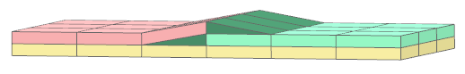
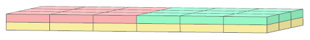
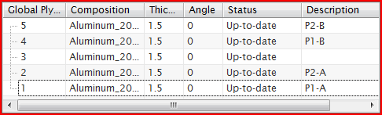
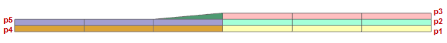
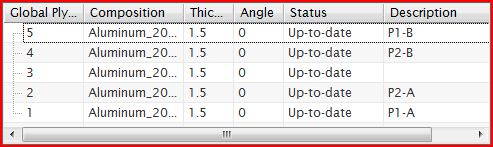
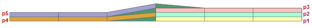

In the ply-based process, you can create a butt joint between two plies that are on the same layer when you inflate a 2D laminate. This avoids the creation of spurious drop-off resin elements between the two plies. In the zone-based process, NX always creates butt joints.
|

|
|

|
To create a butt joint, in the Layup Modeler dialog box, specify the same base integer in the Description column of the two plies.
When NX inflates the laminate, it looks in the Description field of each ply and looks at the first integer it encounters.
If two plies have the same first integer, NX creates the butt joint if the following conditions are met:
The plies are on the same layer.
The draping domains of the two plies touch but do not overlap.
The order of plies must not be inverted to butt plies together.
In example 1, ply p1 butts with ply p4 and ply p2 butts with ply p5 because the order of plies is preserved.


In example 2, only ply p2 butts with ply p4. Ply p1 cannot butt with ply p5 at the same time that ply p2 butts with p4, because either ply p1 and ply p2 or ply p4 and ply p5 should be inverted.

